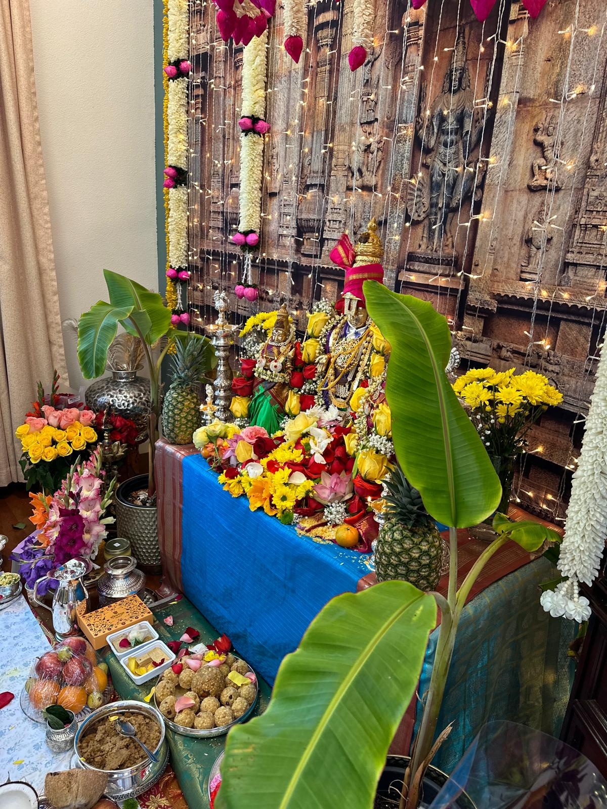
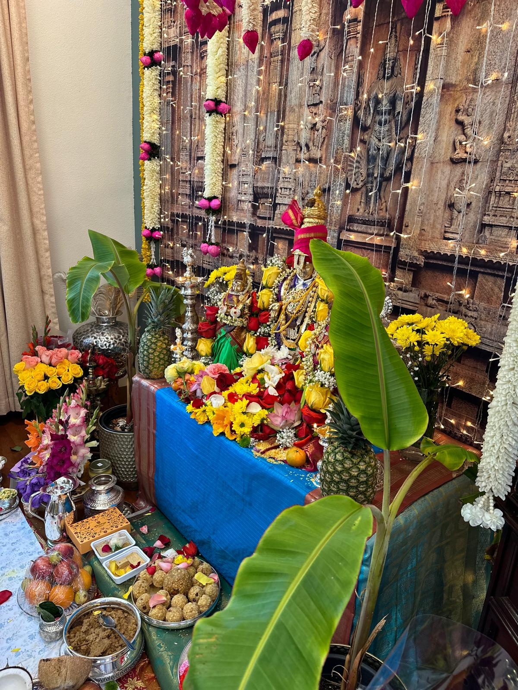

SREE RAMA
Welcome to Bay Area Pooja Store!
Discover the newly launched online pooja store in the California Bay Area! Order a wide variety of pooja items from the comfort of your home and have them delivered right to your doorstep. For inquiries or to place an order, simply message us at the provided number or send an email with your list of required items. Let us cater to all your pooja needs with ease and convenience.
Puja Services Packages
- 1.)Ganapathi Puja , Punyahavachanam (Sudhi)
- 2.)Namakaranam (Naming Cermony)
- 3.)Navagraha santhi
- 4.)Annaprasana
- 5.)Kesha kandana
- 6.)Akshara sreekaram (Aksharabhyasam)
- 7.)Ayushya homam
- 8.)Vasthra samarpana
- 9.)Rajaswala santhi
- 10.)Udhaka Santhi
- 11.) Grahana santhi
- 12.)Prayaschitha Homam
- 13.)Bhoomi Puja
- 14.)Vyapara Prarambhamu
- 15.)Vahana Puja
- 16.)Shanku Sthapana
- 17.)Chandi Homam
- 18.)Sudarshana Homam
- 19.)Vasthu Shanthi
- 20.)Mruthyunjaya Homam
- 21.)Rudrabhishekam
- 22.)Aruna Homam
- 23.)Maha Lingarchana
- 24.)Devatha kalyanam
- 24.)Upanayanam
- 25.)Vivahamu
- 26.)Satyanarayana Vratham
- 27.)Mangala Gowri Vratham
- 28.)Vara lakshmi vratham
- 29.)Kedareshwara Vratham
- 30.)Shasti Purthi
- 31.)Bheema Ratha Shanthi
- 32.)UgraRatha Shanthi
- 33.)Veda Parayanam
- 34.)Cremations
- 35.)Hiranya Shradham
- 36.)Masikalu
- 37.)Aabdikam


 
